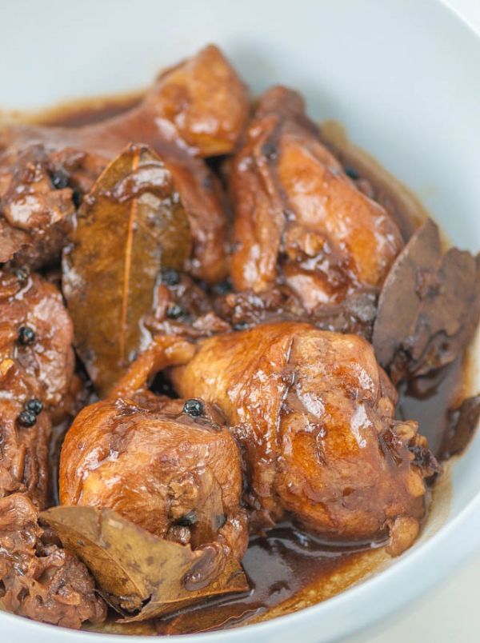

Chicken Adobo

Get ready to make all sorts of friends when you bring a big bowl of this Asian chicken noodle salad to the next big cookout. The only folks you might scare away are the ones who brought regular pasta salads. There's just something delightfully addictive about this special combination of cold and spicy. This recipe is the perfect catchall for all those summer vegetables we're supposed to be eating more of, as well as any dry leftover chicken you have around.
Ingredients
1 kilogram chicken cut ups
1 tsp whole black peppercorns, slightly crushed
Steps
Heat oil in pan and sauté garlic and onions. Then add chicken to the pan and sear on all sides, until you have a little browning in the chicken skin.
Pour in vinegar, soy sauce and water. Add bay leaves, pepper and Knorr Chicken Cubes. Bring to a boil over high heat then reduce heat to simmer, but do not cover the pan. Continue to simmer for 10 mins.
Remove chicken pieces from sauce and fry in another pan until nicely browned.
Put back fried chicken pieces into sauce. Add sugar and let simmer again for another 10 minutes or until sauce has thickened. Serve warm.